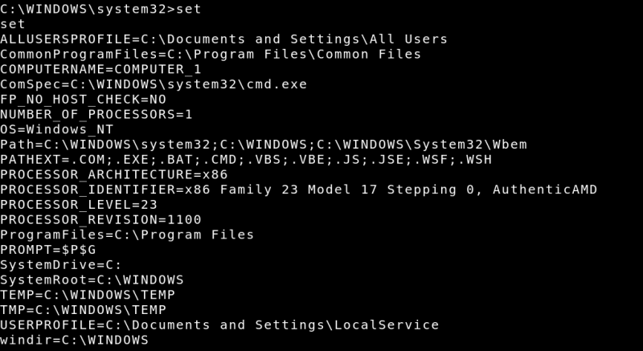

We still need to escalate to “NT AUTHORITY”, if not already. Let’s find a way to check whats our username. This proved to be more difficult than expected. whoami didn’t work.
The “set” command in Windows is similar to Linux’s env. There’s no USERDOMAIN or USERNAME to tell us if we are NT AUTHORITY / SYSTEM. As this thread explains this can be difficult.
Try on the Victime Machine shell.
C:\WINDOWS\system32>set
Output: 
Kali by default has a whoami.exe Windows binary we can run, after transferring over.